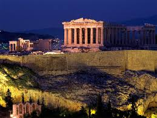
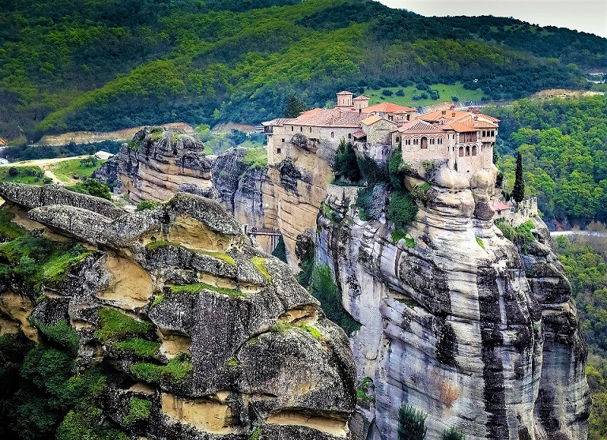
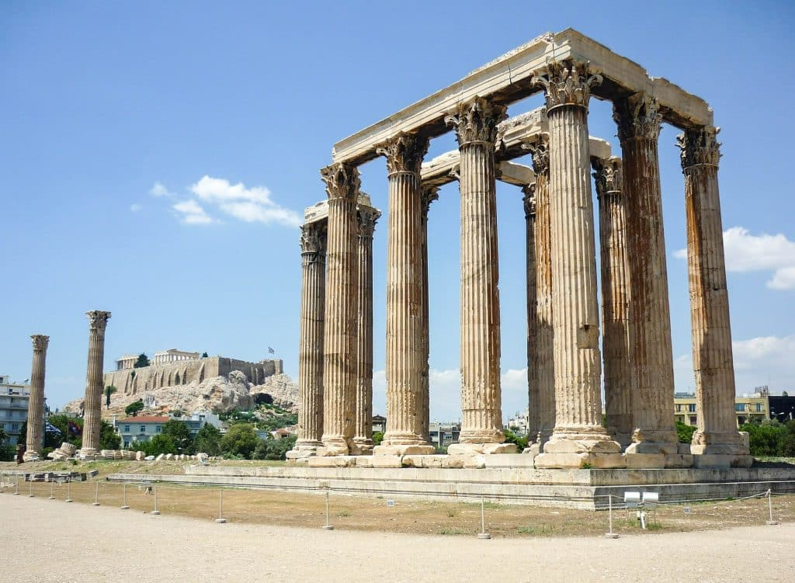
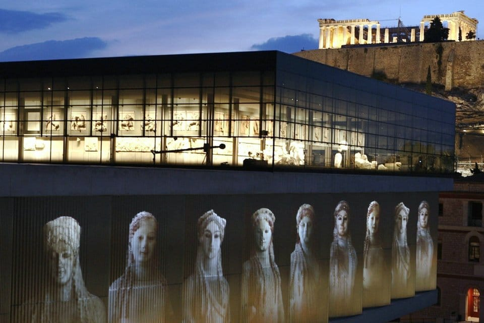

LUGARES TURUSTICOS DE GRECIA
| NOMBRE | DESCRIPCIÓN | IMAGEN |
|---|
| Acrópolis De Aténas |
La acrópolis era, literalmente, la ciudad alta de la grecia antigua, estaba presente en la mayoría de las ciudades griegas, con una doble función: defensiva y como sede de los principales lugares de culto. También es conocida como Cecropia en honor del legendario hombre-serpiente, Cécrope, el primer rey ateniense.Fuente:"https://es.wikipedia.org/wiki/Acr%C3%B3polis_de_Atenas" |
 |
| Meteora |
Los Monasterios de Meteora están localizados al norte de Grecia, en la llanura de Tesalia, en las proximidades de Kalambaka, en el valle del río Peneo. Están clasificados como Patrimonio de la Humanidad por la Unesco desde el año 1988. Fuente:"https://es.wikipedia.org/wiki/Meteora" |
 |
| Templo De Zeus, El Olimpo |
El templo de Zeus Olímpico, también conocido como el Olimpeion, es un templo de Atenas. Aunque comenzado en el siglo VI a. C., no fue terminado hasta el reinado del emperador Adriano, en el siglo II. En las épocas helenística y romana era el templo más grande de Grecia. Fuente:"https://es.wikipedia.org/wiki/Templo_de_Zeus_Ol%C3%ADmpico_(Atenas)" |
 |
| Museo De Acrópolis |
El Museo de la Acrópolis es un museo arqueológico griego situado en la ciudad de Atenas, en un edificio ubicado a unos 300 m al sur de la acrópolis.Es uno de los principales museos arqueológicos de Atenas y es también considerado como uno de los más importantes del mundo.2 El antiguo museo se encontraba en el interior de la acrópolis pero debido a sus pequeñas dimensiones se propuso la construcción de un nuevo museo de mayor tamaño fuera de la acrópolis. Fuente:"https://es.wikipedia.org/wiki/Museo_de_la_Acr%C3%B3polis" |
 |